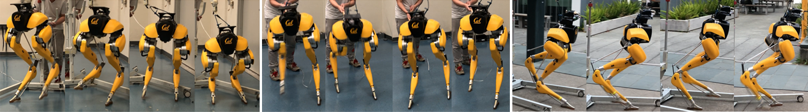

IEEE International Conference on Robotics and Automation (ICRA 2021)
Zhongyu Li Xuxin Cheng Xue Bin Peng Pieter Abbeel Sergey Levine Glen Berseth Koushil Sreenath
University of California, Berkeley

Abstract
Developing robust walking controllers for bipedal robots is a challenging endeavor.
Traditional model-based loco-motion controllers require simplifying assumptions
and careful modelling; any small errors can result in unstable control. To address
these challenges for bipedal locomotion, we presenta model-free reinforcement
learning framework for training robust locomotion policies in simulation, which can
then be transferred to a real bipedal Cassie robot. To facilitate sim-to-real
transfer, domain randomization is used to encourage the policies to learn behaviors
that are robust across variations in system dynamics. The learned policies enable
Cassie to performa set of diverse and dynamic behaviors, while also being more robust
than traditional controllers and prior learning-based methods that use residual
control. We demonstrate this on versatile walking behaviors such as tracking a target
walking velocity, walking height, and turning yaw.
@inproceedings{
CassieLi2021,
author={Li, Zhongyu and Cheng, Xuxin and Peng, Xue Bin and Abbeel, Pieter and Levine, Sergey and Berseth, Glen and Sreenath, Koushil},
booktitle={2021 IEEE International Conference on Robotics and Automation (ICRA)},
title={Reinforcement Learning for Robust Parameterized Locomotion Control of Bipedal Robots},
year={2021},
volume={},
number={},
pages={2811-2817},
doi={10.1109/ICRA48506.2021.9560769}
}